Выпускники IFS Academy
IFS Academy — школа работы с внутренними частями и состоянием Self по методу Internal Family Systems (IFS). Программы ведёт Гэтри Сайен — ученик создателя IFS Ричарда Шварца, один из ведущих преподавателей Evolving IFS, 15+ лет преподавания, 10 000+ часов с клиентами.
Сейчас здесь — выпускники первого модуля IFS Academy. Страница обновляется: после завершения второго модуля и новых потоков в конце мая здесь появятся дополнительные выпускники.
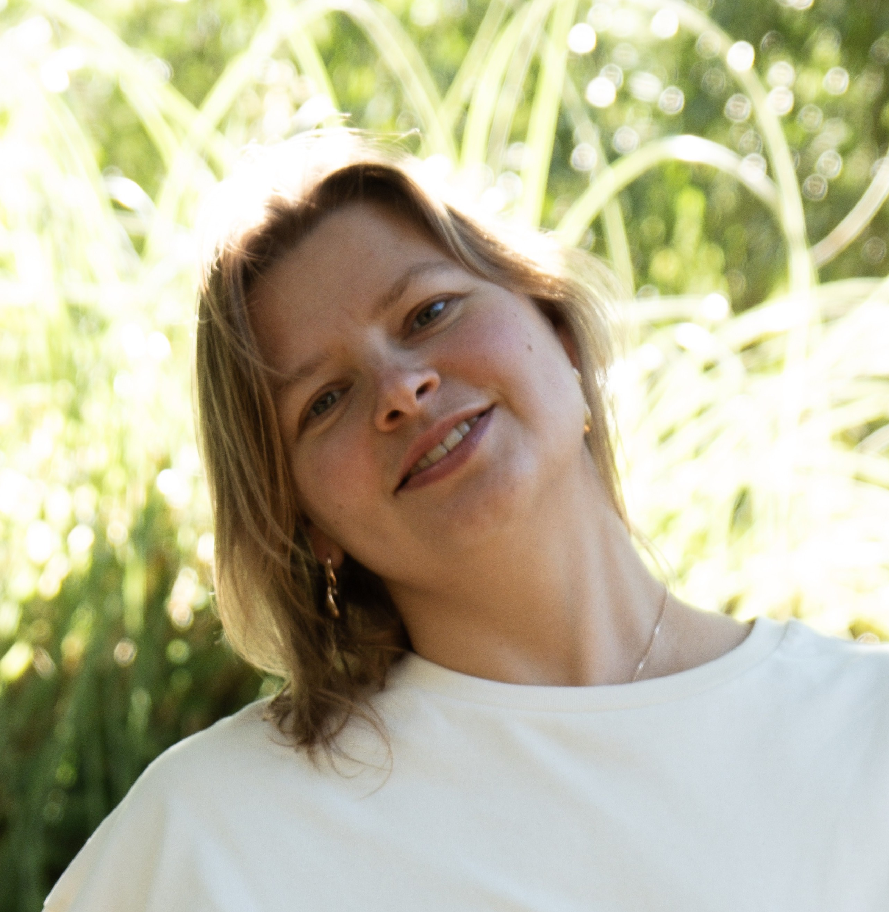

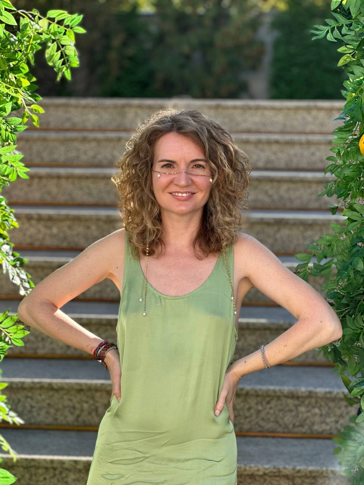
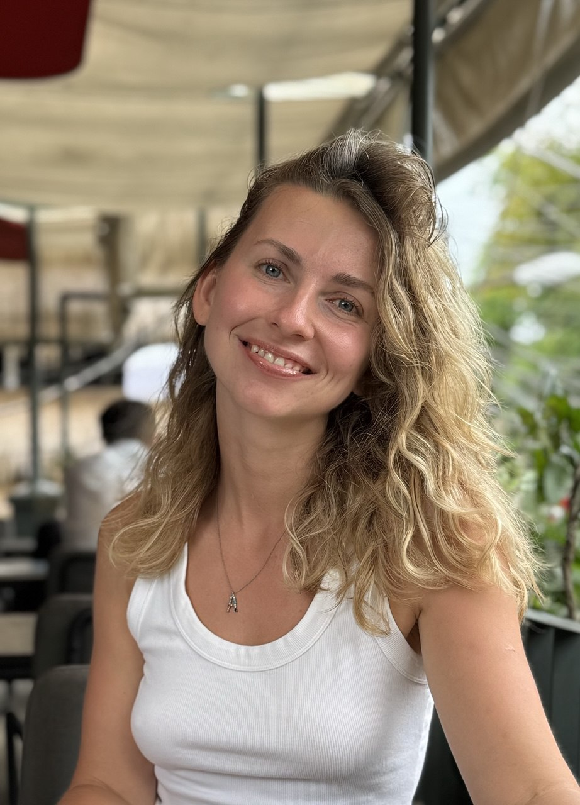
Анна Баздырева
IFS, авторский системный коучинг
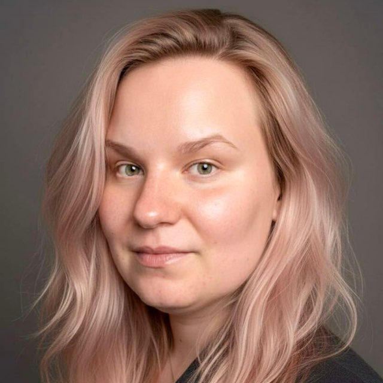
Оксана Зеленская
IFS, экзистенциальный анализ
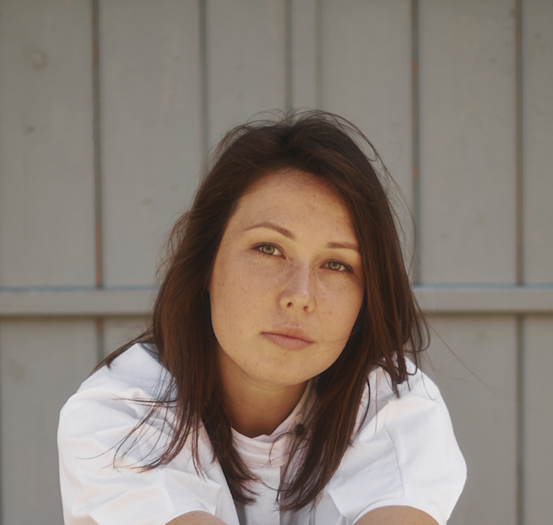
Лидия Казанцева
IFS, юнгианский анализ, сексотерапия
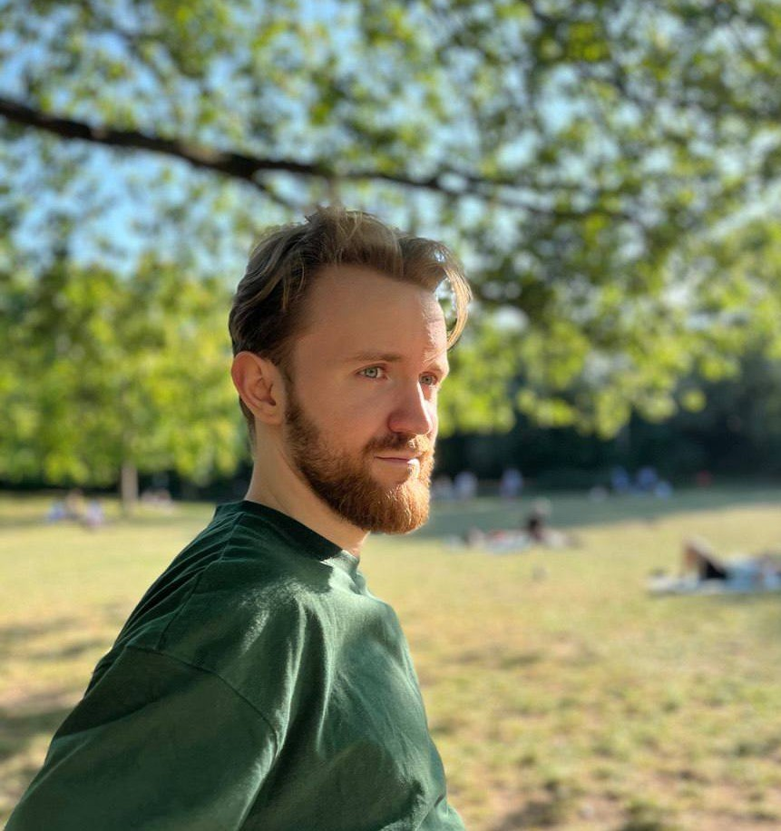
Александр Калашников
IFS, юнгианский анализ, биохакинг
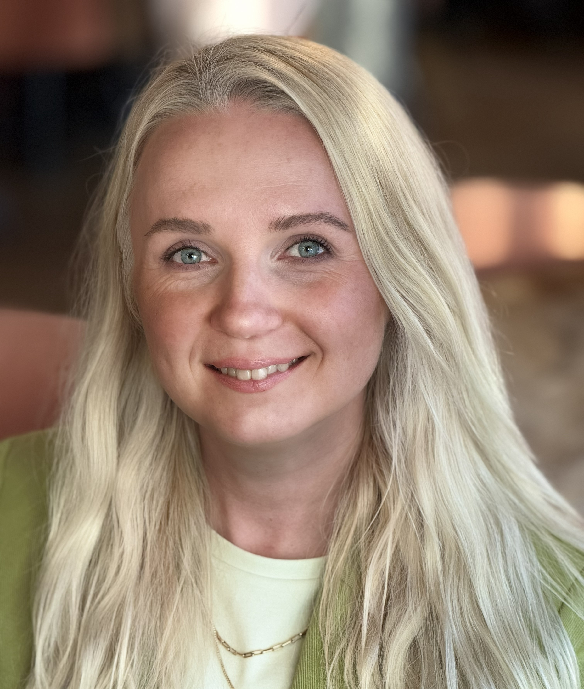
Кристина Кердрё
IFS, нейроинтеграция, психологическое консультирование

Дарья Коблова
IFS, коучинг ICF, breathwork
Саша Колмайер
IFS
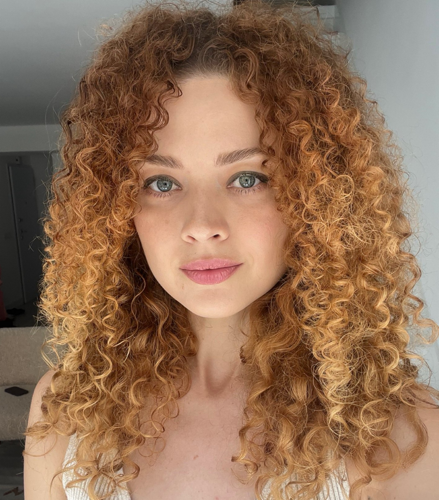
Алиса Корнеева
IFS, коучинг (Mindvalley), Theta Healing, Shadow work

Александра Крецан
IFS, transformation coaching
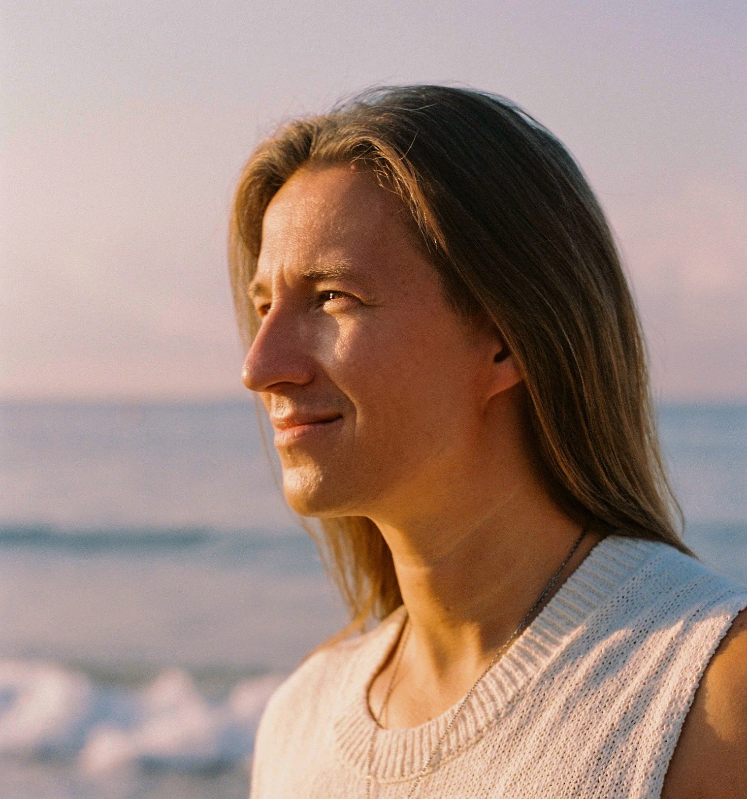
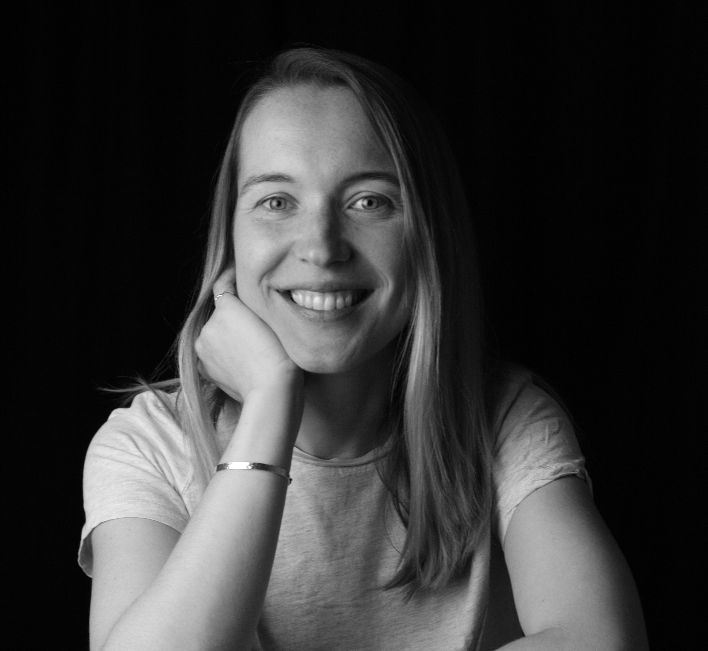
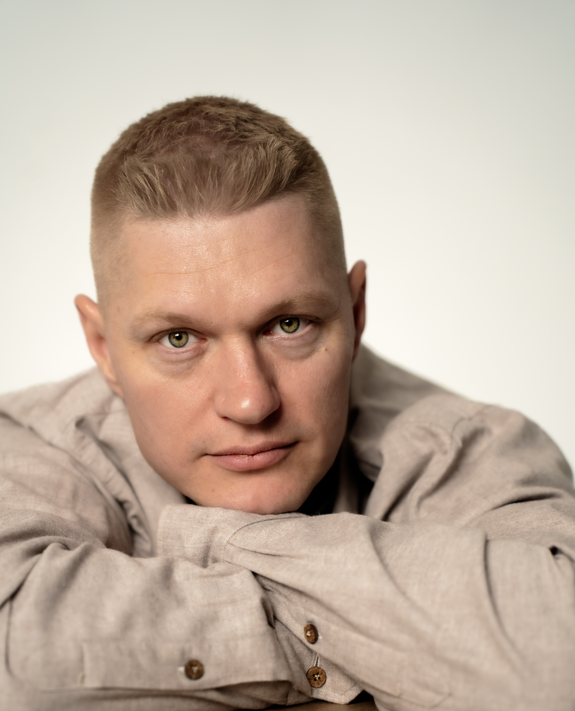
Ольга Олюнина
IFS, коучинг ICF, mindfulness
Анна Пак
IFS, гештальт-терапия, телесная психотерапия, травматерапия
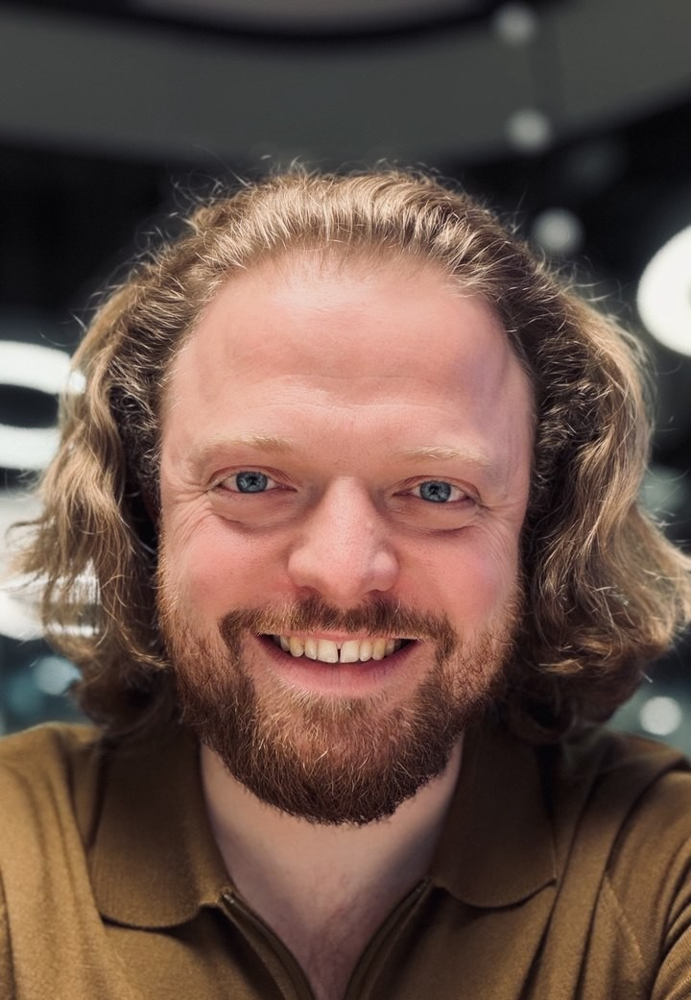
Константин Печенежский
IFS, Systemic Executive Coaching
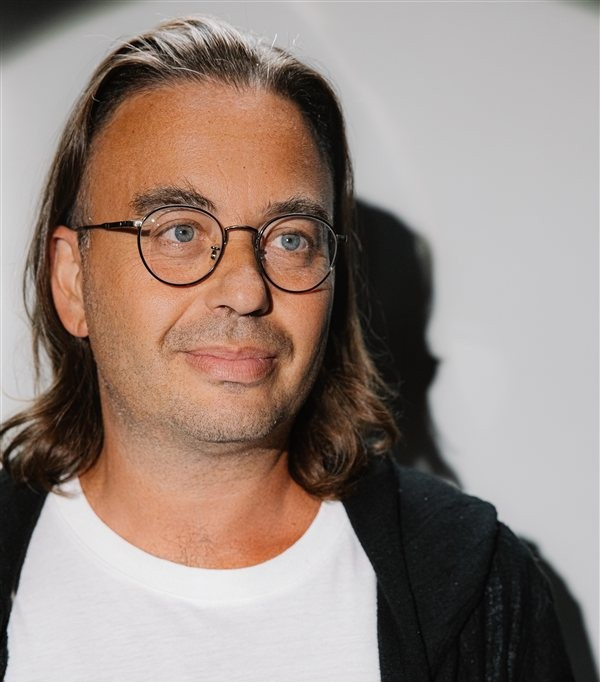
Юлия Швыдкая
IFS, коучинг ICF, бизнес-психология
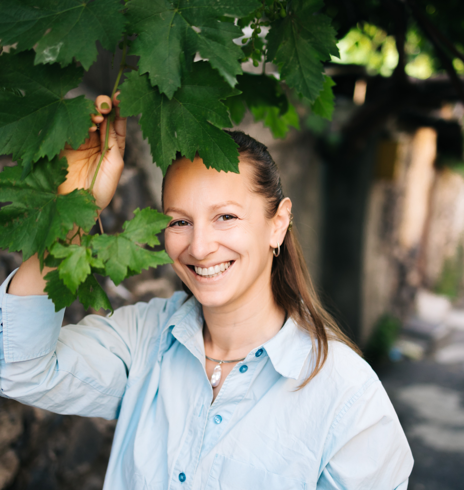
Юлия Шмырова
IFS, доула конца жизни, поддержка в горевании
Подробнее о курсе
Нажмите, чтобы посмотреть темы и критерии выпуска для первого модуля.
Модуль 1
Основы IFS и работа с частями
Фундаментальный курс, закладывающий основу работы с внутренней системой в парадигме IFS. Участники осваивают ключевые концепции, учатся распознавать части и выстраивать с ними контакт из состояния Self.
- Parts Are People
- Self
- Six F's
- BeFriending
- Two Methods
- Managers
- Firefighters
- Exiles
- Three Messages for Protectors
- IFS Protocol
- Safety